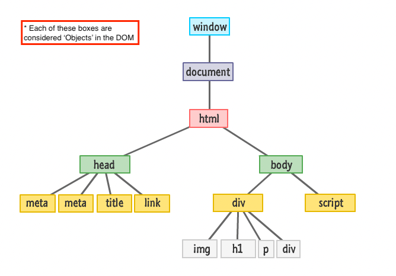

A Christmas Carol
Starring: Javascript, CSS and HTML

Javascript is like Santa Claus. This analogy sounds far-fetched I know, but it will make more
sense as we go.
Let’s say a website is like a house at night time. Everybody has gone to bed, and everything inside the house just sits there motionless.
HTML is what defines the structure/ layout of the house, it names the objects that go inside the house,
and also organises what rooms they exist in.
e.g. The fireplace in the living room,
the table and chairs in the dining room,
the fridge in the kitchen.
CSS is what determines the way these objects look, their “style”.
e.g. The fireplace has an exposed brick façade, the table is wooden and the chairs are also
wooden but with green fluffy cushions.
Javascript is like Santa Claus, in that he has the magical ability to enter a house (the website)
and modify the stuff inside.
To expand on this simile, lets say Santa (javascript) is flying past a house (a website).
He pauses his flying reindeer outside the window so that he can take a wee look at all the things inside the house.
What Java-Santa is doing right now is using the DOM.
Fig. 1
DOM (known officially as the Document Object Model is just like santa’s perspective of looking into the house through the windows.
The DOM turns all the contents (HTML& CSS) of the website into Object representations (the colourful boxes in Fig.1).
Instead of head, div, title, body, Santa can see a wall, a chair, a couch, carpet, etc.
With Javascript, we can be Santa and use the DOM to look at all the objects in the website like that, the html elements all become objects that we can access and modify.
Santa can decide to enter the house using the fireplace and he can navigate through the different rooms of the house, and even interact with objects inside the room, changing their properties and values however he wants.
Yes, yes, I guess a thief could do this too, but Santa has a fairly well known set of behaviours when he
enters a strangers home, so it’s a slightly less chaotic analogy.
Santa comes into the living room and sits on the couch for a bit,
feeling the soft cushions supporting his red (and probably quite sore) but.
He realises that he’s a bit thirsty from his nightly travels
and heads into the kitchen.
Santa takes some milk out of the fridge and
pours himself a refreshing drink. After Santa finishes his milk he goes back into the living room,
counts the stockings, drops coal into some of them and gifts into the others.
After all of this (considered normal santa behaviour)
he magically exits the house, and moves onto the next house where he has the ability
to access and modify the contents of that house too.
Functions in Javascript are like instructions that Santa can leaves behind, which affect the way the house runs. For example, Santa could be annoyed that the house didn’t leave him any cookies by the fireplace when he got there. So he leaves a note saying that next christmas night, he expects the people in the house to leave him a plate with 5 chocolate chip cookies and a glass of milk next to the fireplace. Functions are like that, they effect how the website runs, and are designed to be used more than once.
Loops in Javascript, repeat a function (instructions to do something)
inside of a website for a set number of repetitions. In Santa’s case, a looped function
he might need to perform at different houses is counting how many stockings there are on the mantle.
A javascript loop for Santa's stocking count could look like this:
Conditionals in Javascript are the “if” statements that rely on the user interacting with the website.
In the case of Santa, "if" the occupants of the house have been good, then he leaves gifts.
Else, if they have been bad, he leaves them coal.
A javascript conditional for Santa's moral quandry could look like this:
Both Loops and Conditionals are a way for Santa to control the flow of things in the
house. They allow him to modify the order in which the house normally operates.
One example of this is Santa's “good and bad” conditional function, which would
directly effects how the people in the house behave.
One house might require a counting stockings loop, another house might require him to rearrange
the furniture so he can move through the house better.
Just like each house is different, each
website is different, and will need different loops and conditionals depending on how we want the
website to function.
This is what Javascript allows us to do.
An array is a list or collection of things.
For example the fridge where Santa gets his glass of milk from could be written as the following array:
And an objectcould be the person asleep in their bed while Santa is roaming around
downstairs.
As an object with particular properties in Javascript, you would describe this
person with a set of key: value pairs, a key might be their name, and the value of that key might
be 'Steve':
To access an element from an array, you have to assign a location to the item of the list using a “square bracket” like this [].
In the case of Santa's beloved fridge (an array), we need to locate the milk (element).
To count the items in an Array list we start from 0, not 1 like a standard count.
So it would be:
Now if I were Santa, i'd go for a nice cold [4] after a long night of breaking and entering, but because he wants to access the milk like the adult baby he is, he would use this javascript code to access the milk at [1]:
Alternatively, if he wanted to find the location of the milk in the fridge (the location of the element in the array), he could use the following, which would give him the result of [1]:
For accessing properties in objects, it’s a little different.
A common way to access a property of an object is using the “dot property accessor”.
To find out if Mr. Steven Sondheim has been good or bad this year, Santa could make a variable called
steveBehaviour which is defined by the properties in the Object, specifically the key value pair for 'behaviour'.
Santa could then request the results of Steve's behaviour in the console.log as below, which would result with 'Good':